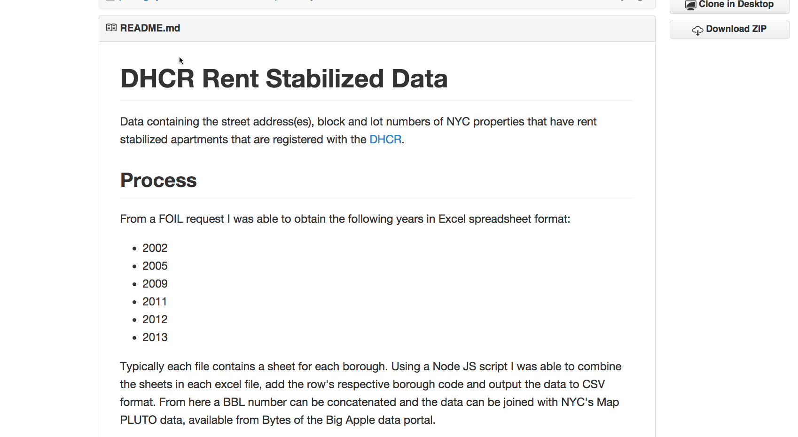
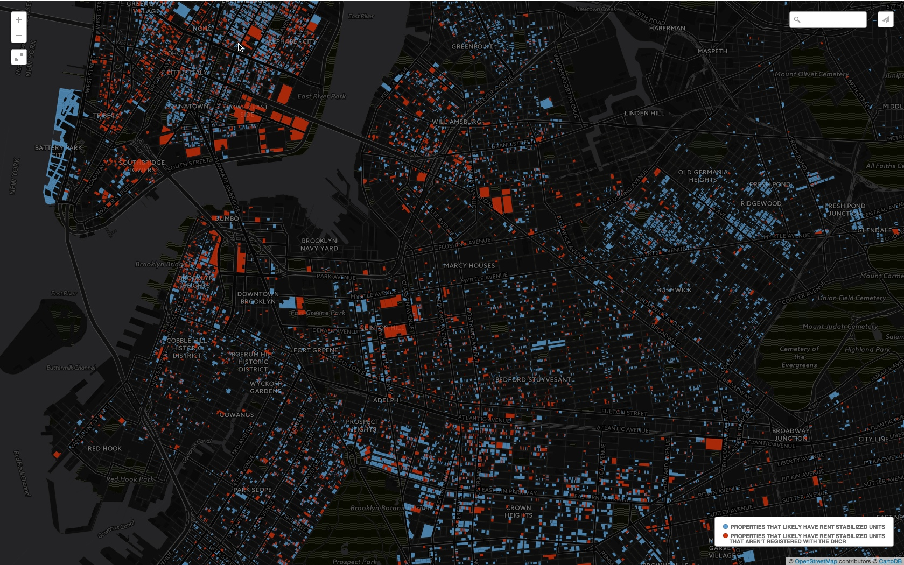

Am I Rent Stabilized?
Chris Henrick
background in geography, cartography, gis, --now work as a web developer. completed this project as part of my masters thesis for the Parsons MFA Design & Technology program
Concept:
A web app to encourage NYC tenants to find out if their landlord is
illegally over charging them in rent.
for a rent stabilized apartment
Background
New York Rent Laws:
include Rent Stabilization
Limits how much a landlord can raise a tenant's rent each year; guarantees renewal lease; harsher penalties for landlord negligence; has its historical roots in the labor movement of the late 1800's / early 1900's
Amounts to ~50% of all apartments in NYC
Really the one thing keeping NYC affordable for millions of people. However...
Problem:
Landlords not telling their tenants they are rent-stabilized.
Problem:
No pro-active enforcement by government for non-compliance.
Burden is placed on the tenant
Enter Open Data
(well sort of open...)

Buildings with Rent Stabilized units
A list of buildings registered with the DHCR containing rent-stabilized units. Again the process is voluntary. 
Buildings with Rent Stabilized units
Borough, Block, Lot number = a unique identifier. Problem was the data is trapped in a PDF.

Was able to obtain the data in a machine readable format
 NYC Map PLUTO = tax lot data for the entire city
NYC Map PLUTO = tax lot data for the entire city

Determine properties that have registered RS units; and those that may have un-registered units;
SQL:
SELECT * FROM map_pluto2014v2
WHERE
yearbuilt < 1974
AND unitsres >= 6
AND bldgclass not ILIKE 'r%';
Anything that was built before 1974, has 6 or more units, and is not a coop or condo
Q:
How to make this data more useful?
A:
Civic Data
>>>
Civic Action
Demo
enough talking!
technologies used:
Postgres & PostGIS
CartoDB (JS)
Leaflet
NYC Geoclient API
Handlebars.JS
GSAP
fin